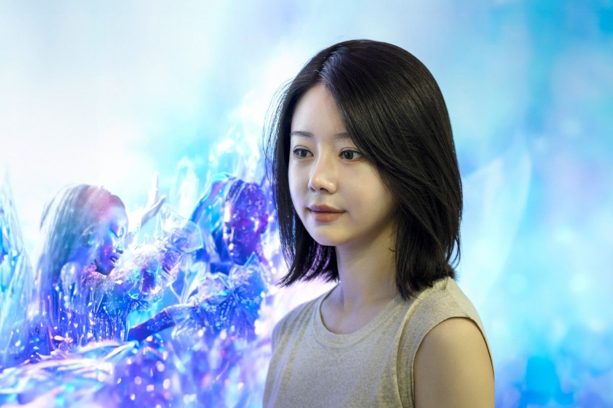

Inhwa Yeom 廉仁和
Inhwa Yeom works across VR, XR, performance, installation, and digital environments. Her speculative worlds often place audiences inside fictional systems where ecology, accessibility, subculture, and social rituals overlap.